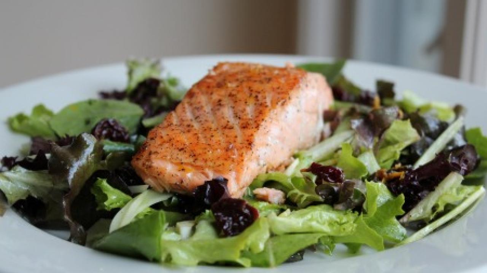

Salmón sellado
Recetas > Salmón sellado
Salmón sellado
El salmón es un alimento altamente nutritivo, ya que es fuente de Omega 3, que protegen la salud cardiovascular y rico en proteínas de alta calidad que favorecen el desarrollo muscular.
El salmón suele formar parte de un sinfín de recetas, lo que se debe a sus nutritivas propiedades y su ligero consumo. En la cocina, puede emplearse de múltiples maneras y esta preparación de salmón sellado es incomparable.
Ingredientes
- 1 filete de salmón de 200 g.
- 1 cucharada de Aceite de Oliva.
- 1 cucharadita de páprika.
- 1 cucharadita de semillas de mostaza trituradas.
- 2 cucharaditas de miel.
- El jugo de 1 limón.
Para la marinada:
Valor nutritivo por porción
- 541 kcal
- 36 de grasas
- 40 de proteínas
- 12 hidratos de carbono
Preparación
- Coloca todos los ingredientes en un tazón excepto el salmón, mezcla esta marinada y coloca dentro el salmón, deja marinar por 20 minutos.
- Prepara una sartén con un cucharada Aceite de Oliva y cocina el salmón a la plancha por ambos lados hasta que se vea dorado, sirve de inmediato.